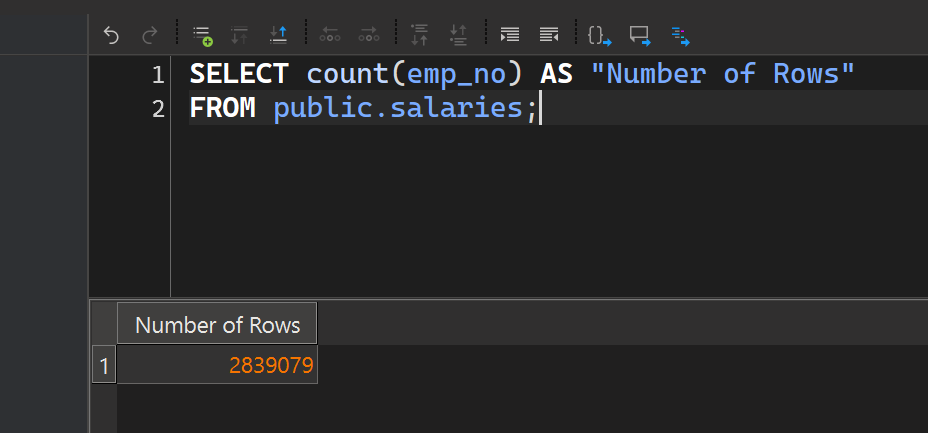
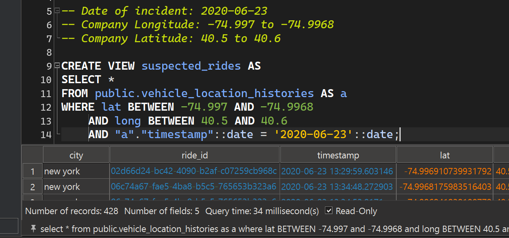
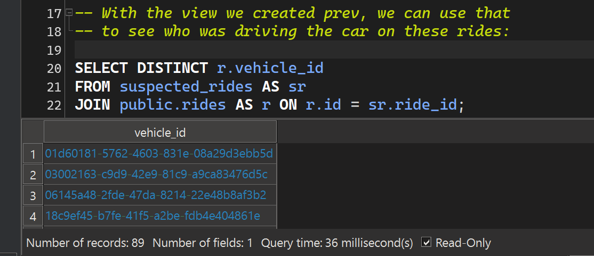
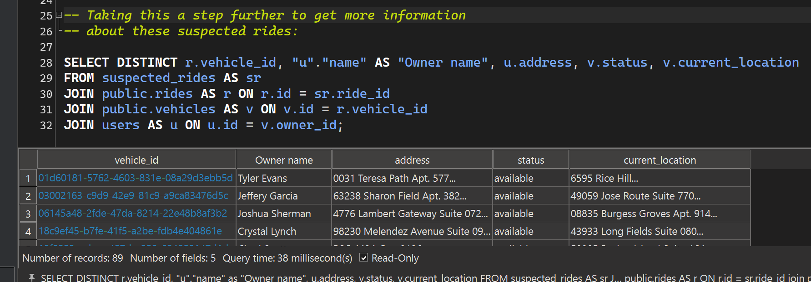
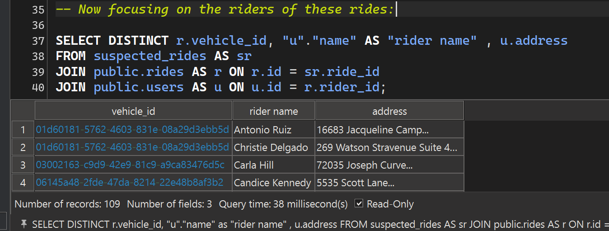
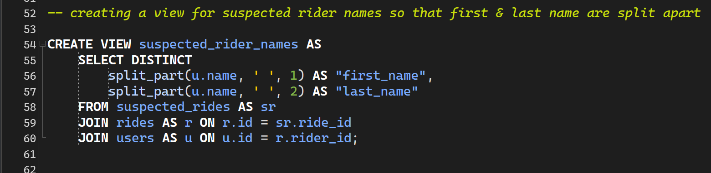
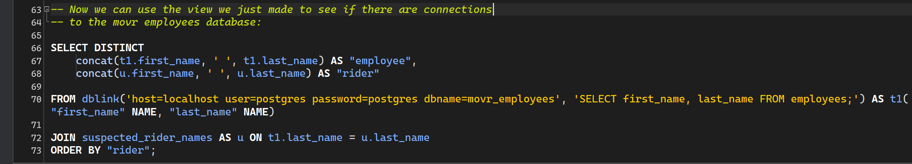
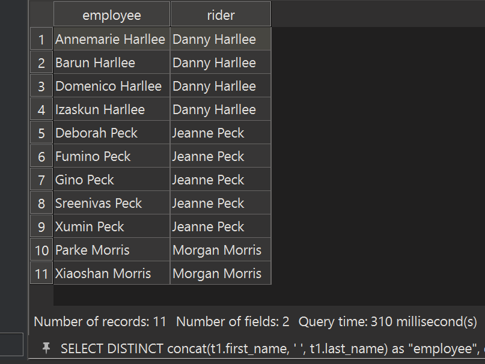

Project Overview
In this SQL case study, I investigated a simulated data breach using two restored databases: Movr_Employees and Movr, a ride-sharing product. Through joins, views, and cross-database queries, I traced user actions, matched locations, and pieced together clues. The breach was solved by identifying who caused it, why it happened, and who was involved—showcasing SQL expertise, attention to detail, and the ability to find answers hidden in data.
First 2 Clues:
- The data breach was an inside job
- It was done on 2020-06-23

We are dealing with a good size data set for this case, so I indexed the foreign key columns and others that will speed up query run-times
The company's employees and their families travel for free with the Movr platform, and since the company is located in the heart of Downtown New York, it's assumed they may have used the platform to get around.
With what we know now, we should be able to deduce some information from the Movr database. Let's try to figure out what vehicles were at the location of the company...

with some extra info having the longitude and latitude of the company's location, and the day, we've narrowed the pool of rides to 428.

With this query, we can see that there were 89 vehicles driven for those 428 rides, which means 89 different drivers!

joining across different tables, we get names, addresses, and even current location to these 89 drivers.
The 3rd Clue:
After interrogating the 89 drivers, it became inconclusive. None of the drivers seemed sus, and there was nothing to uncover.
After the unfortunate dead end, we get another clue that helps with the case: It's not the drivers, it's most likely the riders, which makes more sense.

With this query now focusing on the riders instead, we get 109 riders and their names and addresses.
The 4th Clue:
Once again, after interrogating these 109 riders, nothing was conclusive.
But wait, this data breach was an inside job. These are all people using the Movr platform, not necessarily employees of the company. Though it is confirmed this breach was a collaboration between 2 people, one on the inside, and one on the outside. To make any more progress, we need to make use of the second database which has tables on the employees of the company, and see if there are any connections to these drivers or riders with the employees.

the "name" column combined the first and last name into one column, so we needed to split them in order to join to the employees

this query will expose the connections these riders have to the employees by last names, the results:

We now get 11 new possible suspects for the person who was on the inside
Case Cracked
After interrogating these 11 individuals, Parke Morris confessed he was guilty, and the one on the inside who caused the data breach.
His motive was that he had been working for the company since 1989, pouring his heart and soul into the company and helped build it. But the CEO stopped promoting Parke Morris, so he felt like he wasn't getting the recognition he deserved, causing him to make copies of the company's database and share it with a family member.
Thankfully we caught him before he decided to sell the copies of the database, and Mr. Morris returned them to the company.
Conclusion
By restoring and analyzing the Movr and Movr_Employees databases, I followed a trail of clues using advanced SQL techniques—joins, views, and cross-database analysis. The investigation narrowed the suspects to 11 employees with potential ties to riders outside the company. After connecting actions, locations, and last names across the datasets, the case concluded with a confession from Parke Morris as the insider responsible for the breach.
This project demonstrates not only technical SQL expertise but also the ability to think critically, connect complex data points, and uncover clear answers from raw information—skills that translate directly into solving real business challenges such as fraud detection, anomaly tracking, and operational analysis.